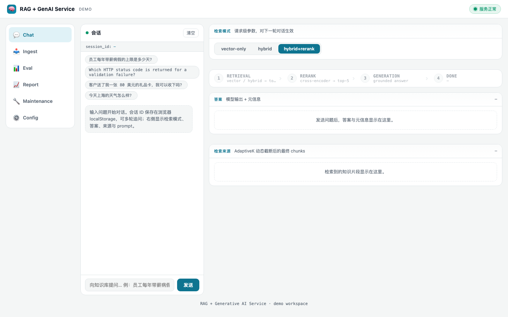
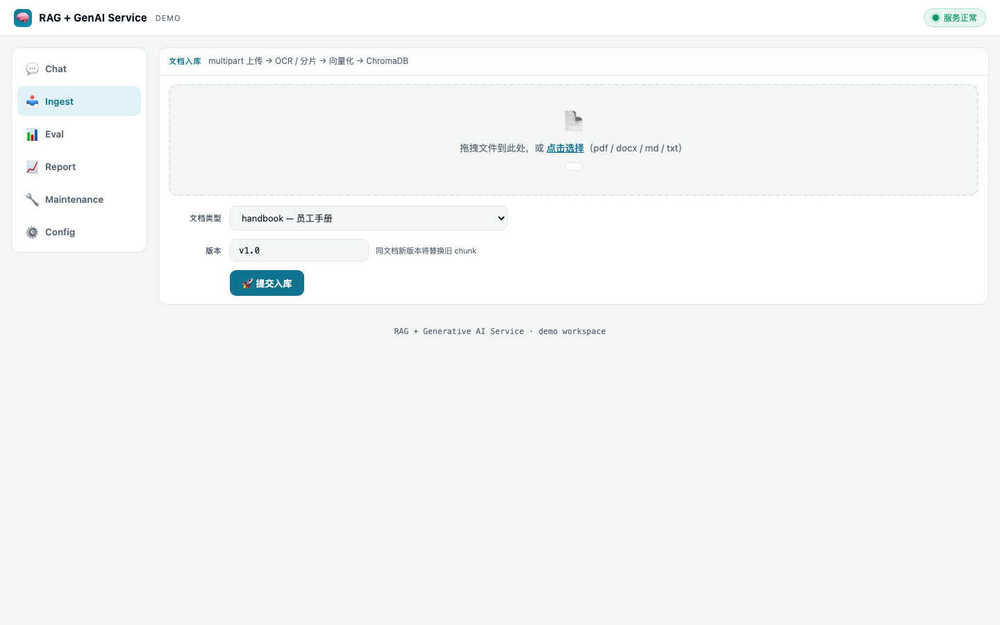
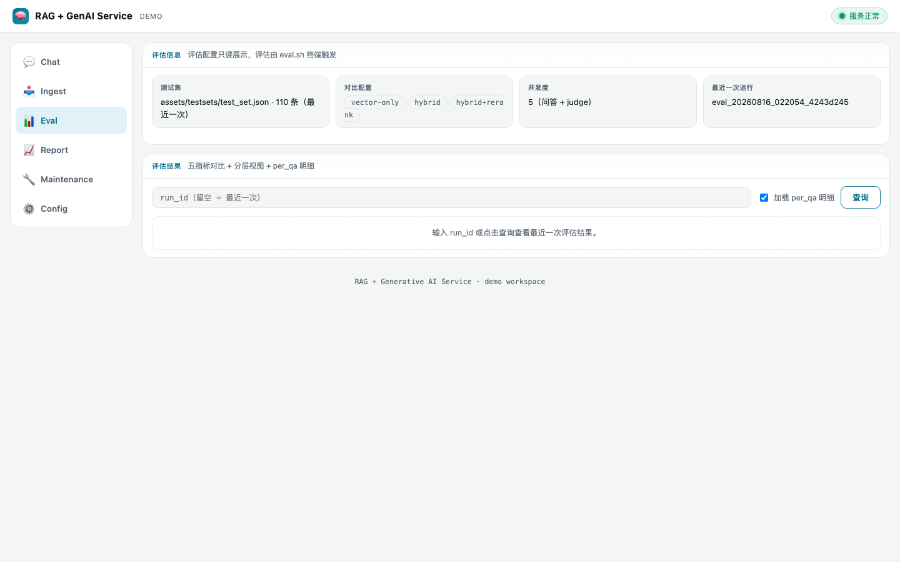
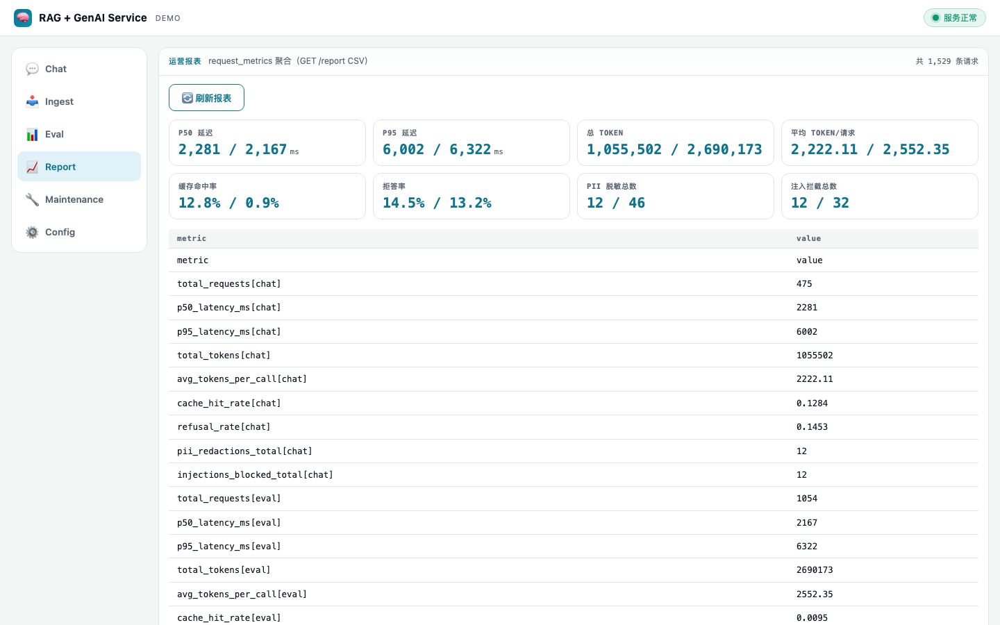
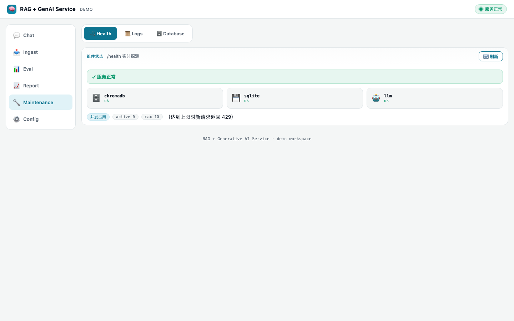
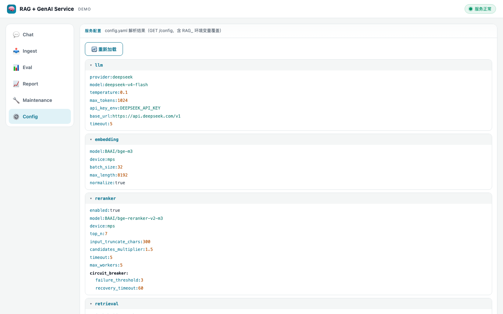

RAG QA Service · 演示
无框架单文件工作台，六个视图覆盖对话问答、语料入库、评估明细、运营报表、运维与配置。截图取自真实运行实例，可在本地启动后访问。
打开演示 http://localhost:8000/rag-gen-ai-service-demo输入问题，走完整「检索 → 生成 → 后处理」链路。右侧逐步展示 pipeline 状态，回答下方标注来源 chunk、拒答 / 缓存命中标记与延迟。

上传 PDF / DOCX / Markdown，OCR 解析 → 分块 → 向量化入库，实时展示 chunks 数与来源。

三检索配置的五指标对比表、分层视图（OOS 拒答率 / 误拒检测 / 未作答分解）与逐条 per_qa 明细（含 judge 理由）。

request_metrics 聚合：chat / eval 双分组的 p50 / p95 延迟、Token 用量、缓存命中率与拒答率。

组件健康探测、结构化日志查看、SQLite 表浏览（含 source 过滤）与清空缓存。

config.yaml 解析结果，分组折叠树展示全部配置项（含环境变量覆盖）。
